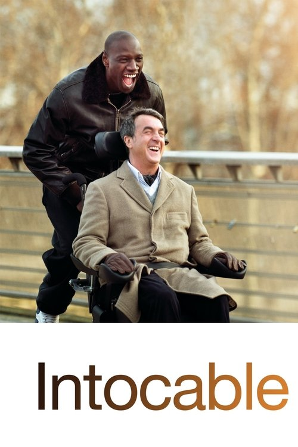

Película
Intocable2011
Drama · Comedia
Dónde verla
- Amazon Prime Video
- Acontra Plus
Tu cinéfilo de confianza
Acto I
Cuéntale cómo estás.
Acto II
Tú
Hoy no tengo el día y me apetece algo que abrace…
Umber
Pensando…
¿Te apetece algo que te acompañe en el bajón, o algo que te saque de él?
Tú
Que me saque de él.
Umber
Te propongo Intocable: una amistad improbable que te va a sacar más de una carcajada.

Película
Drama · Comedia
Dónde verla
Juegos
Adivínala por su cartel, cada vez menos desenfocado.

Tu cinéfilo de confianza